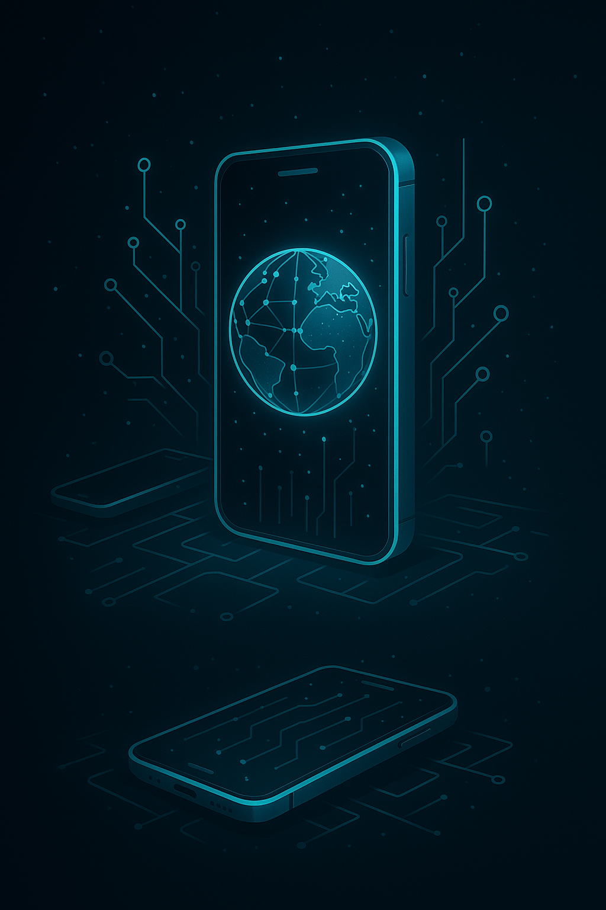
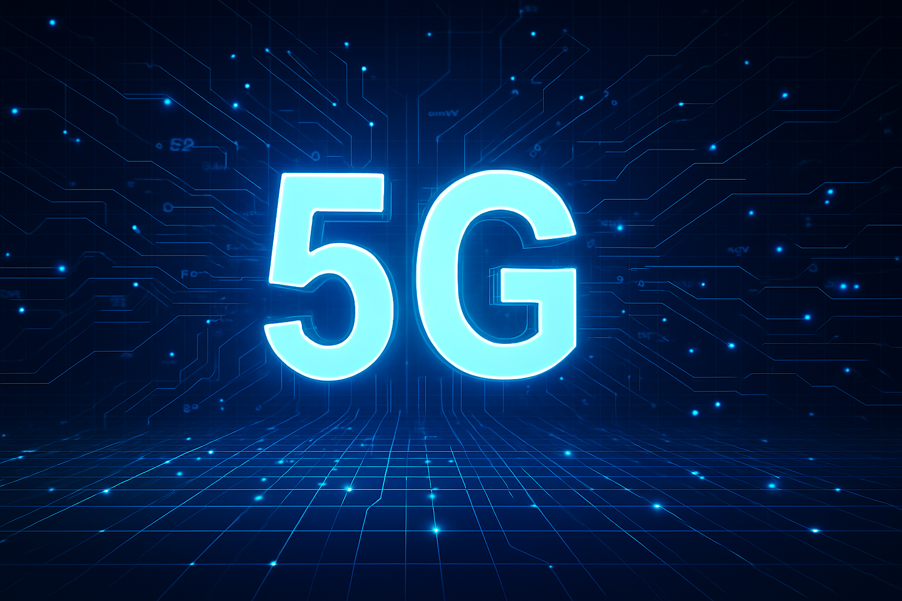
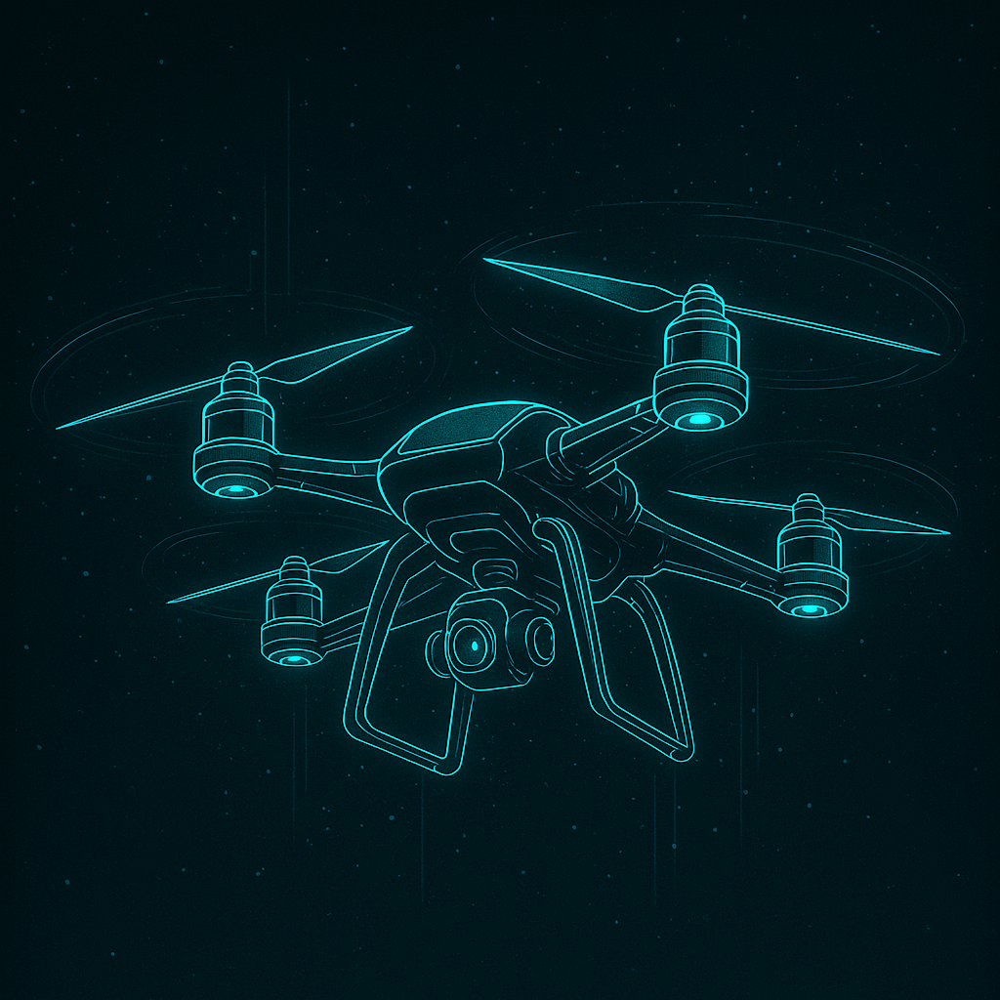
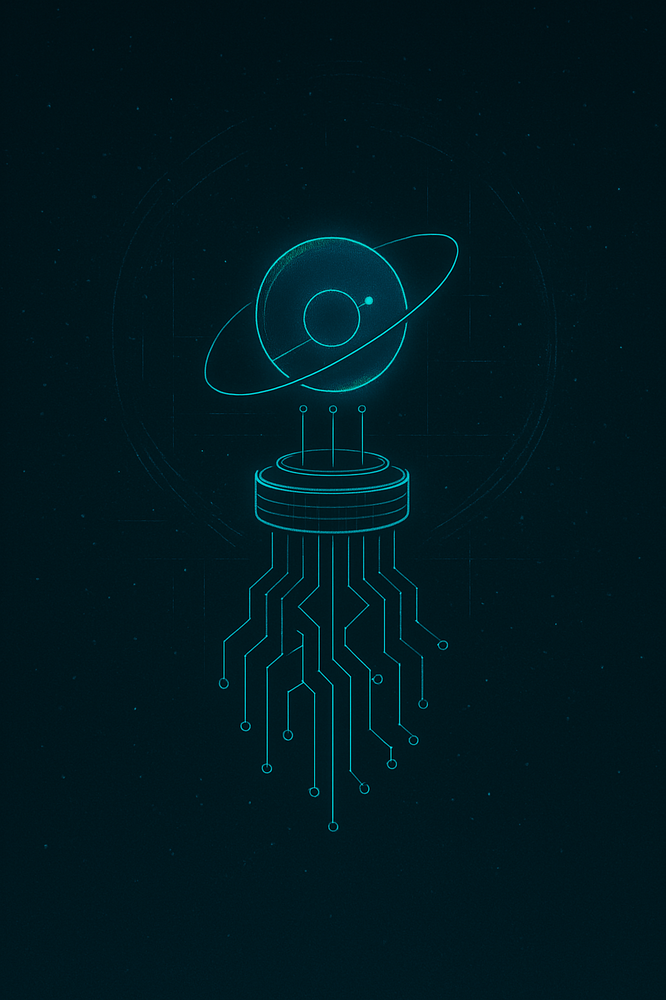

Proyectos Emblemáticos de la Era Digital
Tecnologías e invenciones clave que han reconfigurado la comunicación, la industria y nuestra interacción con el mundo.

Teléfonos Inteligentes
Ver más
Smartphones
La evolución del dispositivo móvil que cambió nuestra vida diaria.
Computación en la Nube
Ver más
Cloud Computing
Infraestructura digital esencial que impulsa servicios y escalabilidad.

Redes 5G
Ver más
5G
Conectividad ultrarrápida habilitando el futuro del IoT y más.

Impresión 3D
Ver más
Fabricación Aditiva
Permite crear objetos complejos capa por capa.

Drones
Ver más
Drones / UAVs
Vehículos aéreos no tripulados revolucionando múltiples sectores.

Computación Cuántica
Ver más
Quantum Computing
El futuro del procesamiento basado en la física cuántica.